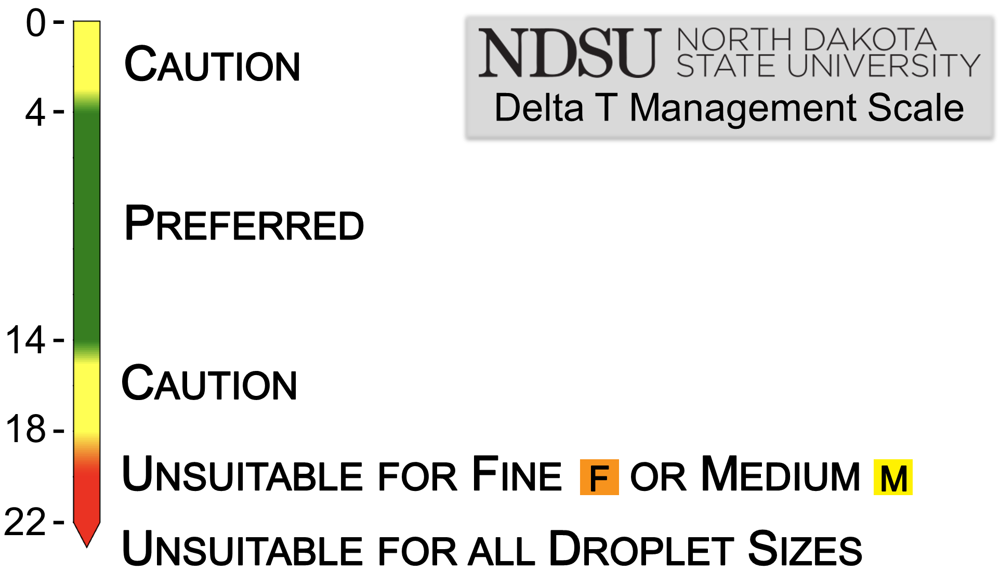

About this website
This is an experimental site created and maintained by Rob Proulx, Agriculture Technology Systems Specialist with North Dakota State University Extension. Delta T forecast maps are derived from National Weather Service hourly forecasts and are not an official NWS forecast product.
All other maps are from the North Dakota Agricultural Weather Network or derived from its data. Visit NDAWN.org, NDAWN.info, or the NDAWN Inversion app.
What is Delta T?
Delta T describes the evaporative capacity of the ambient air – the higher the value, the drier the air and the greater its evaporative capacity.
When Delta T values exceed 14 °F, excessive spray droplet desiccation and spray deposit evaporation may result in reduced herbicide efficacy. Impacts will be most noticeable when using FINE or MEDIUM spray qualities, and glufosinate (Liberty) is the active ingredient most likely to be negatively impacted by elevated Delta T.
Delta T management recommendations for spraying are embedded in the maps featured on this site:
Use caution (■) when Delta T is 3.6 or less – droplet drift will have enhanced activity due to slow evaporation
Delta T conditions from 3.6 to 14 are preferred (■).
Use caution (■) when Delta T is 14.4 to 18 – rapid evaporation may reduce efficacy. If you choose to spray, you may need to increase water volume, droplet size, or both to maintain efficacy.
Conditions are unsuitable (■) for MEDIUM or finer sprays, and marginal for COARSE or larger sprays, when Delta T is 18 to 21.6.
Conditions are unsuitable (■) for all droplet sizes when Delta T is greater than 21.6.

For more information on Delta T, read this NDSU guide or watch this short overview video from Rob Proulx. For more information on managing Delta T, see this short video from Kyle Okke on X or this video from Rob Proulx.
Using forecast maps
Forecast maps are a planning tool. If planning to spray on days when maximum Delta T is forecasted to reach the caution or unsuitable ranges, plan ahead to schedule sprays most likely to be impacted – such as those requiring finer droplet sizes or higher water volumes – for earlier in the day. When spraying on these days, be sure to closely monitor NDAWN for changing conditions.
Using historical maps
Historical maps are a troubleshooting tool. If you notice poor efficacy from an application, check the maximum Delta T map for the date of application to see if Delta T may have been a contributing factor. If so, you may want to dive into the hourly NDAWN data, from NDAWN.org, for more information on the weather conditions for that date.
Contact
Please direct any questions or comments to Rob Proulx, NDSU Extension Agriculture Technology Systems Specialist.